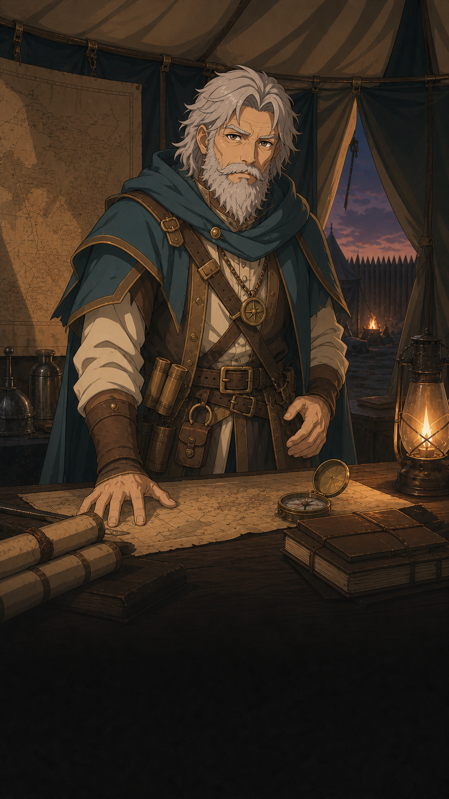

Parcours de sauvetage et de livraison des preuves des prospecteurs perdus.
Comprendre ce que cela implique
Cette fiche distingue la mission du catalogue et sa disponibilité dans le monde initial minimal. Les étapes décrites peuvent être testées lorsque les lieux requis existent ; leur présence au catalogue ne suffit pas à rendre la mission jouable au démarrage.
Le rapport et le géologue occupent chacun une place de bagage. Les prendre puis les remettre matérialise le sauvetage et ses preuves : lire le dialogue ne remplace pas ces transferts officiels.

Dans cet article
Détails de référence
Texte de référence mis en forme et conservé dans l’historique de cet article. Les paragraphes datés peuvent décrire une évolution ou une étape antérieure.
Depuis le passage au monde initial de dix lieux, cette mission reste au catalogue mais n’est plus disponible au démarrage : son camp, ses indices et sa mine supplémentaire ne sont pas créés. Leur ajout à l’acceptation ou aux étapes de quête reste à raccorder. Le parcours ci-dessous décrit la mission lorsque ses lieux sont présents, notamment dans les tests isolés.
Deuxième mission disponible dans le nouveau moteur à actions, après le pilote Le ravitaillement. Elle réutilise les lieux du monde Chaos et ne réactive pas l’ancien moteur de phases. Le titre ancien « Les prospecteurs disparus » désigne la version historique ; la nouvelle fiche porte le même identifiant logique missing-prospectors, dans un état de moteur séparé.
Déroulement disponible
Accepter la mission du maréchal à la capitale et confirmer son ordre.
Atteindre Valgrise et questionner Armand.
Atteindre et examiner deux marqueurs de piste dans l’ordre.
Atteindre le champ de bataille et prendre le rapport dans le stock privé.
Atteindre la mine et remporter une bataille contre ses défenseurs.
Ouvrir la porte par le dialogue, puis prendre en charge le géologue.
Retourner à Valgrise et présenter le survivant à Armand.
Retourner à la capitale, déposer le géologue puis remettre le rapport.
La réussite attribue 50 XP et 25 or à l’acteur, une fois. L’abandon ne récompense pas le joueur et ne permet pas une nouvelle acceptation par ce même joueur. Aucun délai artificiel ni enchaînement vers l’évacuation n’est ajouté. Le mode implémenté est solo ; la coopération sur une instance n’est pas proposée pour cette mission, afin que le porteur des deux objets reste son participant.
Lieux, données et autorité
data/quests/missing-prospectors.json décrit les 18 actions et leurs dépendances, les deux stocks d’objets réservés à l’instance. Les apparitions sont déclarées dans les locationSlots du scénario Chaos. data/quests/missing-prospectors-dialogues.json fournit les dialogues à choix. Les observations des traces sont des scènes narratives de type Parler : elles ne transfèrent pas d’objet dans les bagages. La fouille et le sauvetage utilisent Prendre ; la remise finale utilise Donner. Le géologue et le rapport occupent chacun une place de bagage et sont effectivement déposés à la capitale.
Le camp est désormais placé relativement à la capitale dès la préparation. Deux lieux de type quest dans le catalogue et le scénario représentent les indices. En simulation, leurs positions préférées sont (64, 55) et (69, 60), avec une portée d’interaction de 3 unités. Les positions définitives sont validées lors de la construction du monde officiel ; aucune règle de quête ne dépend du DOM. La publication requiert les six lieux : capitale, camp, deux indices, champ de bataille, mine. La capitale et le camp royal appartiennent au monde connu et sont visibles au départ. Le premier indice apparaît après question-chief, le deuxième après inspect-first-trace et le champ de bataille après inspect-second-trace. Chaque indice disparaît après son examen ; le marqueur du champ de bataille disparaît après sa fouille. Ces éléments sont éphémères. La mine est durable et à découvrir : la proximité peut l’ajouter à la carte du joueur avant la quête ; search-battlefield la révèle aussi explicitement. Sa découverte ne débloque pas les actions de quête en avance. Les apparitions concernent seulement les participants et sont conservées dans les sauvegardes. Les boutons suivent toujours les dépendances des actions. Les scènes sur marqueurs ne nécessitent pas de chef de lieu. Sur la carte, les deux indices portant le rôle clue affichent une piste de semelles alternées (visuel SVG), plutôt que le pictogramme générique de quête. Leur apparence ne change ni la présence, ni les déclencheurs, ni les interactions. Les indices cachés réservent leur espace : les rayons d’interaction sont séparés par une marge de 8 unités fictives ou 20 mètres GPS. La préparation recalcule les positions trop proches. À chaque synchronisation serveur, les apparitions et disparitions sont reconstruites depuis les instances officielles de quête ; un ancien état de visibilité du monde ne valide aucune action. Les anciennes sauvegardes sans ces indices conservent leurs quêtes disponibles mais ne reçoivent pas automatiquement cette mission. Une nouvelle partie est nécessaire pour bénéficier de ces lieux.
Le service résout les rôles logiques, y compris targetLocationId du combat, avec les bindings. Une victoire doit appartenir au héros participant, cibler la bonne mine et dater du déblocage de l’action. Les batailles terminées sont transmises par le serveur ; inventer un identifiant de bataille ne suffit pas. La mine doit être vaincue pendant la mission : une victoire antérieure au déblocage ne valide pas son objectif. La sauvegarde conserve la progression et les objets ; la reprise ne rejoue ni création, ni récompense.
Validation
Tests du parcours serveur en GPS et simulation, reprise après victoire, refus d’un combat inconnu, mauvaise cible et défaite, dépendances, présence auprès du donneur, dialogue hors lieu, abandon et récompense unique. La projection conserve l’offre de ravitaillement pendant la mission des prospecteurs et masque les instances d’un autre joueur.
Correction du placement des indices
La préparation traite aussi les lieux de type quest, toujours en placement automatique même lorsque les bâtiments sont manuels. Une position d’indice valide dans la zone et respectant l’espacement est conservée ; sinon l’indice est replacé dans la zone. Le déplacement valide son statut placé ; le champ appearance contrôle ensuite son apparition en GPS et simulation. Aucun objectif ni gain n’est modifié. Cette correction concerne les mondes préparés avec ces lieux ; elle ne crée pas les indices absents d’une ancienne sauvegarde.
Déclencheurs dans la définition du scénario
Chaque locationSlot peut déclarer world pour séparer rôle, visibilité et durée de vie. appearance contrôle les éléments de quête et peut révéler un lieu durable inconnu. Un lieu connu n’attend pas ce déclencheur. Les anciennes fiches sans world gardent le comportement appearance : sans déclencheur ou avec { "on": "immediate" }, le lieu placé est visible comme auparavant. { "on": "QuestAccepted", "questId": "missing-prospectors" } attend l’acceptation. Pour le deuxième indice :
{
"on": "ActionCompleted",
"questId": "missing-prospectors",
"actionId": "inspect-first-trace"
}Le serveur se fonde sur les états validés du moteur, et non sur une déclaration du client. Les ids des participants ayant débloqué le lieu sont conservés dans scenarioRuntime.placements[slotId].appearedForPlayerIds. La reprise réconcilie ces apparitions avec les actions déjà accomplies, sans rejouer les récompenses. Une conversation encore en cours ou une lecture locale ne débloquent pas un élément de quête. La proximité découvre les lieux durables configurés discoverable, mais ne déclenche pas les éléments éphémères. Ceux-ci et leurs coordonnées sont exclus des projections avant activation et après consommation. Le retrait est conservé dans retiredForPlayerIds. Les anciennes sauvegardes sans ces règles gardent leur visibilité antérieure ; une nouvelle partie utilise le contrat actuel. Aucun combat ni montant de récompense ne change.